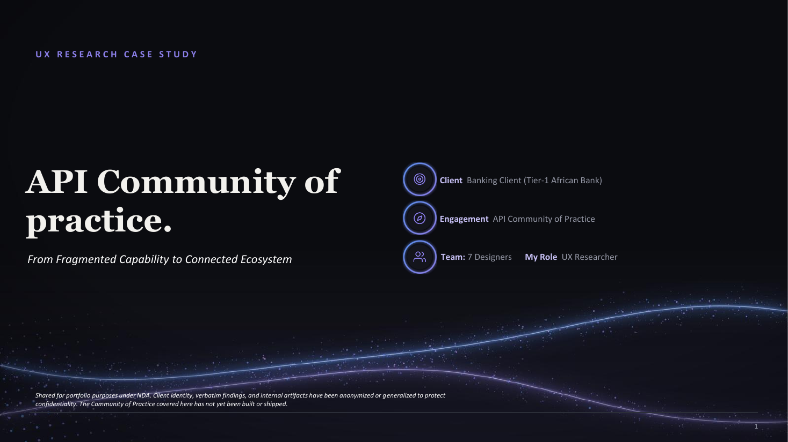

01
Ownership
Who takes responsibility for an API across its lifecycle, including support and handovers?
A discovery engagement into the human layer of an enterprise API ecosystem: why teams rebuild, what makes reuse difficult, and how a connected community could help.
The discovery focused on understanding what shaped API ownership, collaboration, discovery and reuse across teams. The challenge was not only technical visibility. It was also organisational: how teams found one another, shared knowledge and took responsibility for reusable work.
Who takes responsibility for an API across its lifecycle, including support and handovers?
What encourages teams to contribute, share knowledge and reuse existing work?
How do teams coordinate across boundaries and find APIs they can trust and adopt?
The research question was: what makes teams build again instead of reuse?
Roles and accountability, ownership handovers, support and maintenance.
Team priorities, recognition, incentives and attitudes towards shared work.
Dependencies, handoffs, knowledge exchange and coordination breakdowns.
Search, discoverability, suitability, trust and the choice to reuse or rebuild.
The territories framed the interview protocol and kept the investigation focused on the behaviours and conditions behind reuse.
I worked as part of a seven-person design team, led 9 of 16 stakeholder interviews and contributed to synthesis and ideation.
Helped shape the protocol around ownership, incentives, collaboration and discovery, using questions designed to surface real examples and working practices.
Led nine interviews, exploring how teams currently discover, build, maintain and reuse APIs.
Contributed to affinity mapping, grouping observations and identifying patterns across stakeholder perspectives.
Contributed to ideation that translated research themes into a more connected community proposition.

The research pointed towards a human and organisational layer around the API ecosystem: shared ownership, knowledge exchange, visibility and reasons to participate.
People need to understand who maintains an API and where to go for support.
Sharing needs to fit team incentives and everyday priorities, not rely on goodwill alone.
Reuse is easier when teams can connect, ask questions and learn from one another.
Finding an API is only the start. Teams also need confidence that it is suitable and supported.
Rather than treating the Community of Practice as a static catalogue, the recommendation was to think of it as a living system that grows through interaction, identity and shared learning.
The organism metaphor shifts attention from simply storing APIs to enabling people to discover, discuss, improve and reuse them. A sense of belonging can make participation more natural, while self-organisation gives the community room to evolve.
Help people find APIs, but also help them find owners, exchange knowledge, learn about API capabilities and build relationships around shared practice.
Give members a reason to see themselves as part of a shared practice.
Support questions, discussion and learning about APIs, including how they work and where they can be used.
Allow useful activity and knowledge to emerge from the community, supported by clear governance.
Balance autonomy with standards, ownership and dependable information.
Research conducted within a seven-person design team. I led 9 of 16 stakeholder interviews and contributed to synthesis and ideation. Client details are anonymised under NDA.
Back to selected work ↑